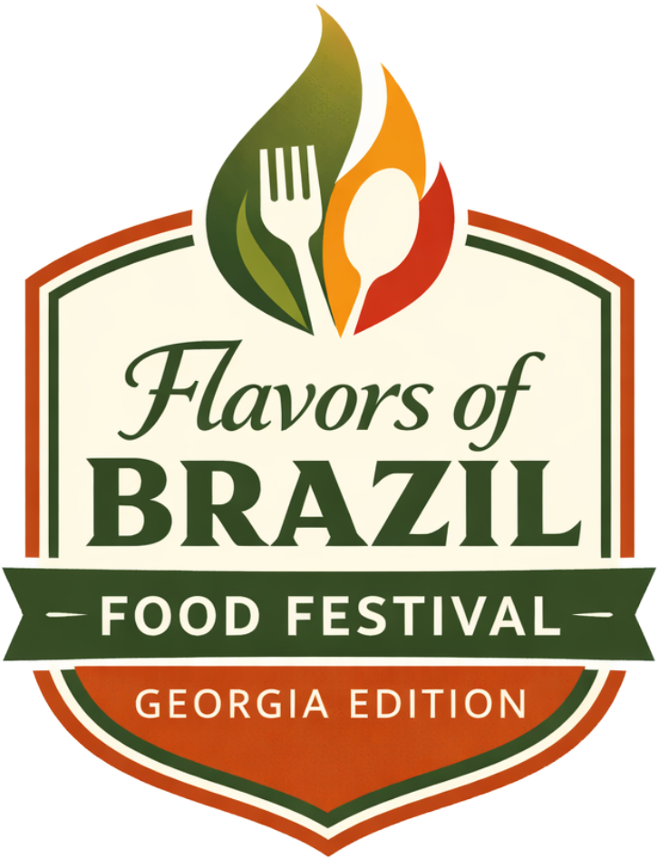

📍 Atlanta Metro · Georgia · 2026
Restaurantes brasileiros reunidos em uma experiência única.
Menus especiais criados exclusivamente para o festival.
Sobre o Festival
O Flavors of Brazil – Food Festival (Georgia Edition) é um circuito gastronômico que reúne restaurantes brasileiros na região metropolitana de Atlanta para promover a culinária nacional, gerar visibilidade e fortalecer a presença da comunidade gastronômica brasileira.
Esta primeira edição terá caráter promocional e colaborativo, sem competição ou votação. Um evento para celebrar e unir.
Como participar
Cada restaurante participante cria um prato ou menu especial, exclusivo para o período do festival, com preço fixo e identificação oficial do evento.
Crie um prato ou menu exclusivo que represente o melhor da sua cozinha para o festival.
Defina um valor fixo para o prato do festival. Simples, transparente e atrativo para o cliente.
O prato deve estar disponível durante todo o período do festival, garantindo consistência.
Sinalize o prato como parte oficial do Flavors of Brazil 2026 com os materiais fornecidos.
Participantes
Passo a passo
Explore os participantes e encontre o seu próximo lugar favorito.
Ligue diretamente para o restaurante ou acesse o link de reservas.
Ao chegar, solicite o prato especial do Flavors of Brazil 2026.
Marque #FlavorsOfBrazilGA e mostre sua experiência para o mundo.
Restaurantes
A inscrição é realizada exclusivamente pelo site oficial. Vagas limitadas para garantir qualidade e exclusividade.
Quem realiza
Realização